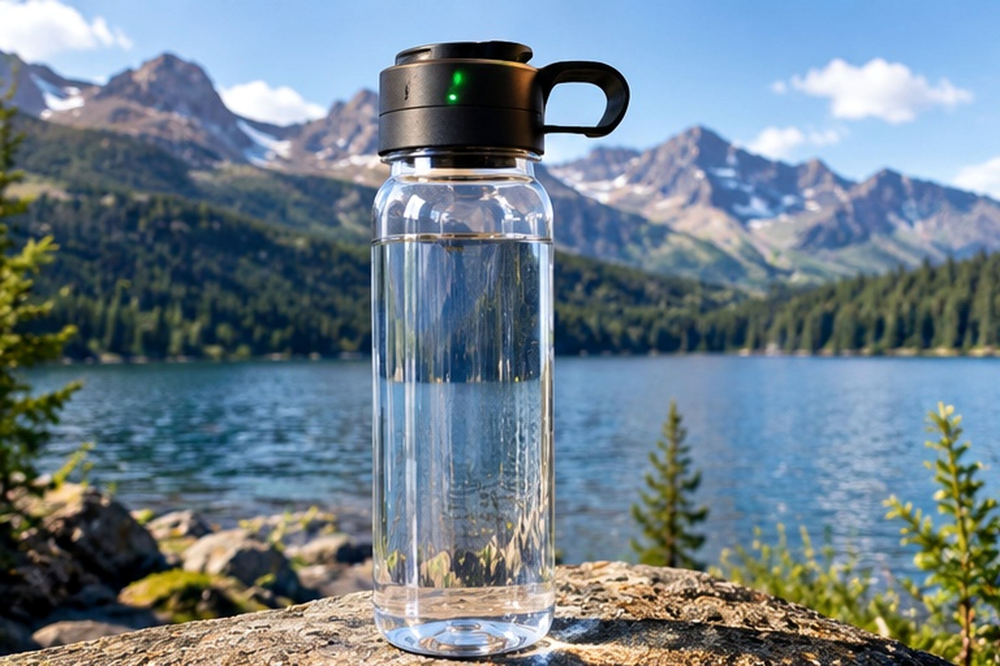
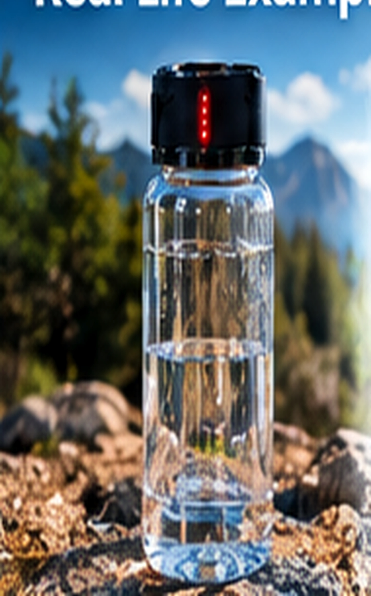
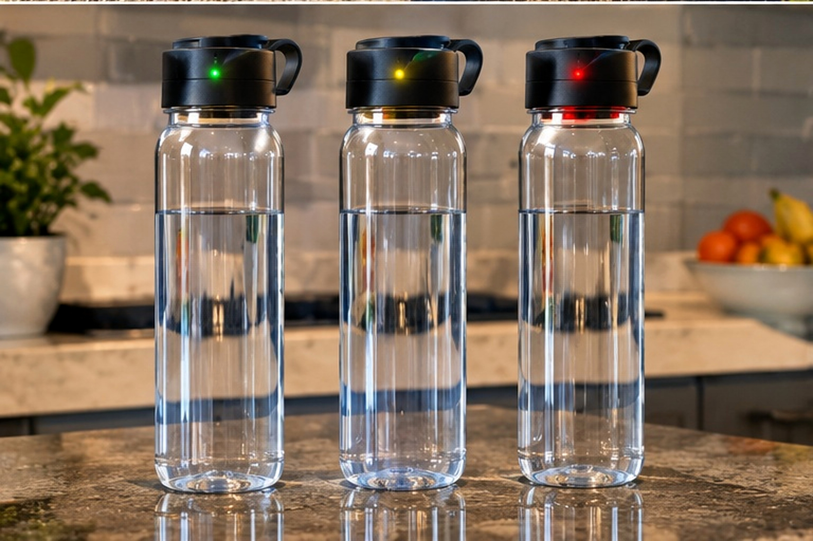
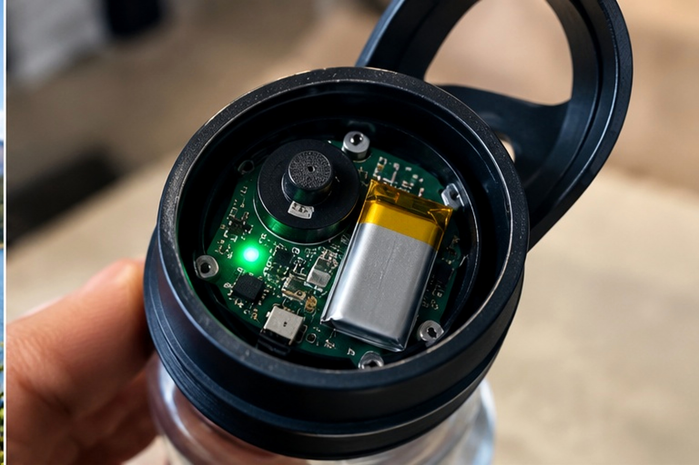
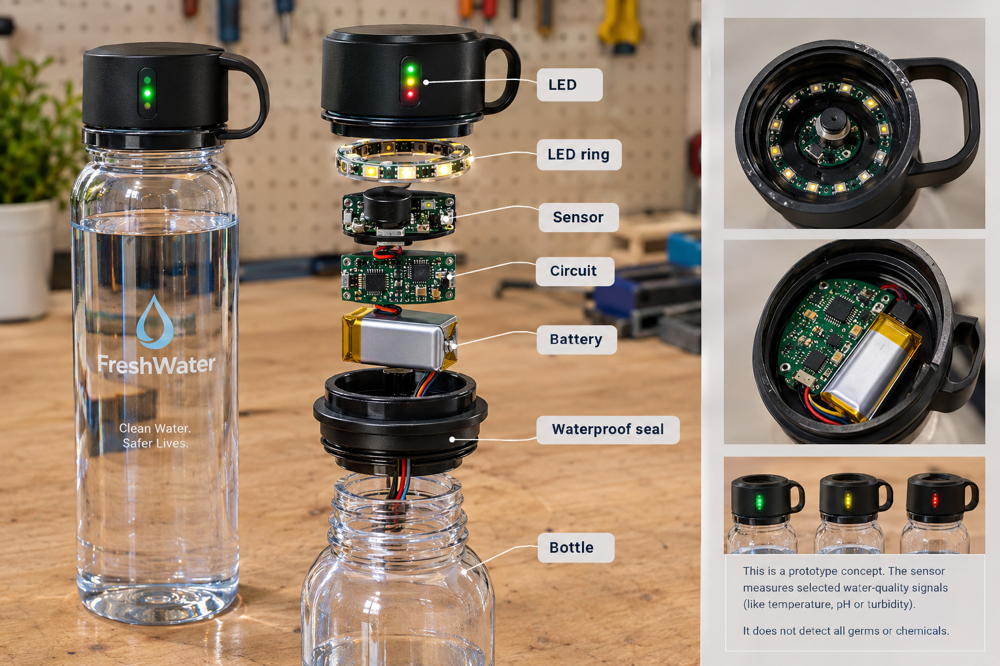
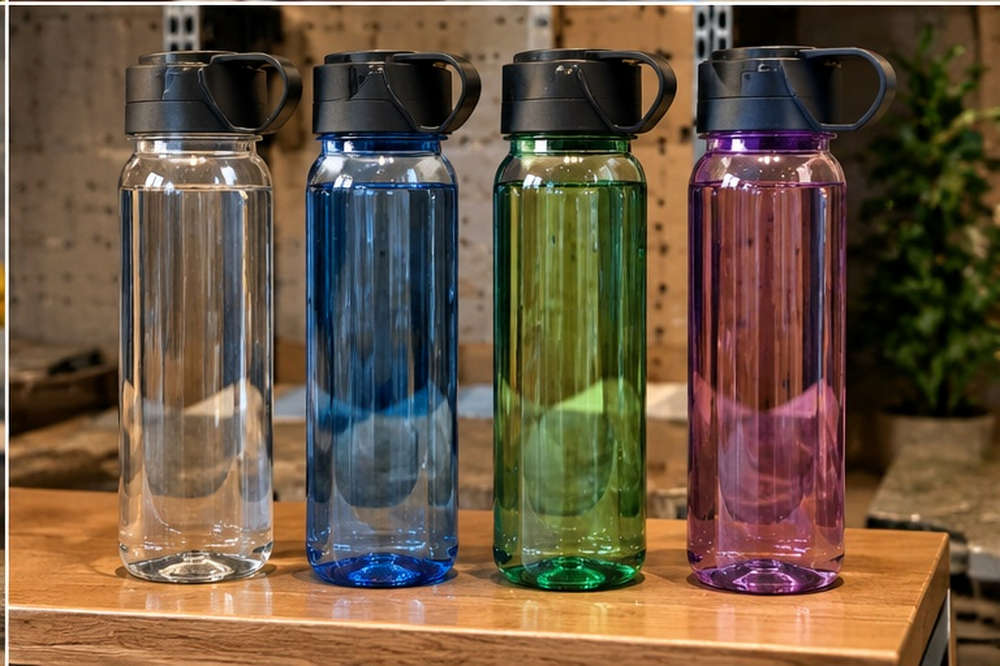

Checks selected signals
A first prototype can measure cloudiness and temperature — not every possible contaminant.

A reusable bottle that gives you a simple signal about selected water-quality readings.
At school, on a trip, or outdoors, people do not always know where their water came from or what is in it.


FreshWater combines a reusable bottle, a small sensor system, and a bright LED indicator built into the cap.
A first prototype can measure cloudiness and temperature — not every possible contaminant.
A tiny controller compares readings with settings created during testing.
A green, yellow, or red light helps the user decide what to do next.
The sensor reads the water, the controller processes the reading, and the light shows a simple result.
A sensor checks one property, such as cloudiness. A temperature sensor checks how warm the water is.
An ESP32-style controller reads the values and compares them with tested limits.
An RGB LED shines green, yellow, or red so the user can react quickly.

Start with two simple readings. Build and test those before trying to add more.
A light-based sensor looks for changes caused by particles suspended in water. It can compare samples, but cannot identify every particle or germ.
A waterproof temperature probe measures how warm or cold the water is. Temperature alone cannot tell you whether water is safe.

Colours show how the reading compares with the settings — not a laboratory safety certificate.
The readings are inside the chosen test range. This does not prove that the water is safe to drink.
The reading needs attention. Recheck the sample and use a trusted water source if unsure.
The reading is outside the tested range. Do not rely on the bottle alone; verify using a trusted source or proper water test.
The cap keeps the electronics together and makes the colour easy to see.
A clear signal is useful when someone needs a quick reminder to check a water reading.
A reusable bottle with a simple status light that does not require opening a phone.
Extra information can help — but always bring safe drinking water and follow local advice.
A design that could make sensor readings easier for more people to understand.
Buying hobby electronics one at a time is expensive. This is a planning estimate for a working demo unit.
| Part | Est. cost (CAD) |
|---|---|
| Reusable bottle | $8.00 |
| ESP32 development board | $25.65 |
| Turbidity sensor | $14.51 |
| Temperature sensor allowance | $20.00 |
| RGB LED ring | $15.95 |
| Battery / charging parts | $8.00 |
| Wires and connectors | $5.00 |
| Cap case, seals, mounting | $10.00 |
| Estimated subtotal | $107.11 |
Plan for roughly $90–$120 CAD depending on the exact parts and enclosure. These estimates are not supplier quotes.
This is the cost of one early demo using retail modules. The $8 target on the next slide is a future goal for a redesigned, high-volume product—not the cost of this prototype.
A real product would use a redesigned circuit board and parts bought in larger quantities instead of hobby development boards.
CAD estimate using individually purchased modules, sensors, a bottle, a battery, wires, and an enclosure.
CAD target per bottle after redesigning the electronics, using a custom low-cost circuit, and ordering parts in large quantities. This is an ambitious goal, not a confirmed factory quote.
Our planned everyday price is $24.99 CAD, with a launch offer near $19.99 and a possible premium price of $26.99. The $8 build cost is a future high-volume target, not today’s prototype cost.
A possible single-bottle price range is $19.99–$26.99 CAD; $24.99 is our planned everyday price. At $26.99, the target gross profit would be $18.99 per bottle if the $8 cost target is achieved. The 4-bottle family pack at $59.99 has a target gross profit of $27.99. Gross profit is before ads, shipping, fees, tax, returns, warranty, research, and salaries. All $8 cost figures are goals to verify, not confirmed quotes.
People who want a reusable bottle and a simple way to see selected sensor readings.

The smart route is to prove the idea before producing lots of bottles.
Connect the sensor, controller, battery, and light. Start with known water samples.
Compare sensor readings, check for leaks, improve the cap, and get expert feedback.
Request supplier quotes and build a small batch only after tests and costs look good.
We are asking for $10,000 CAD for 15% equity as a classroom pitch example.
This is a school-pitch assumption, not a real investment offer or company valuation.
The goal is to validate the technology before making a large order.
Changes in turbidity (cloudiness) and temperature compared with test settings. The warning is useful information, not a final safety answer.
It cannot detect every bacterium, virus, chemical, or contaminant. A green light must never be presented as proof that water is drinkable.
Cost estimates are for planning only, in Canadian dollars unless a source says otherwise. Retail prices, shipping, tax, supplier stock, and bulk discounts can change.
Links used to check example component prices.
FreshWater is a concept for a more understandable water-checking experience — designed to be tested, improved, and built responsibly.